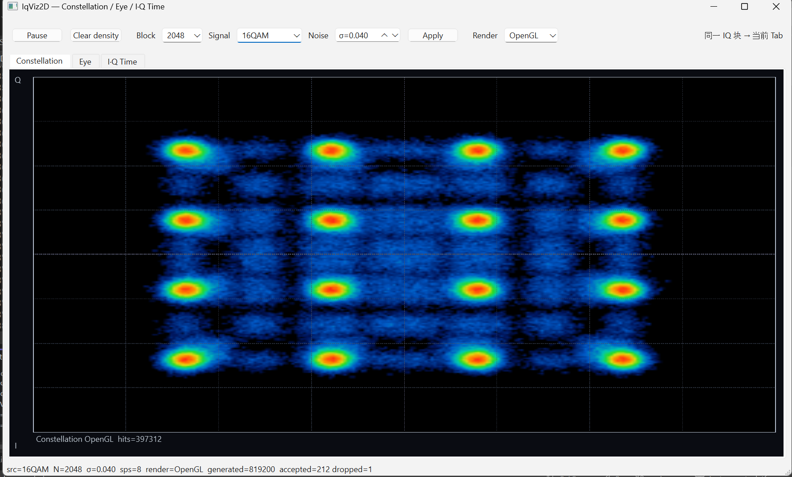
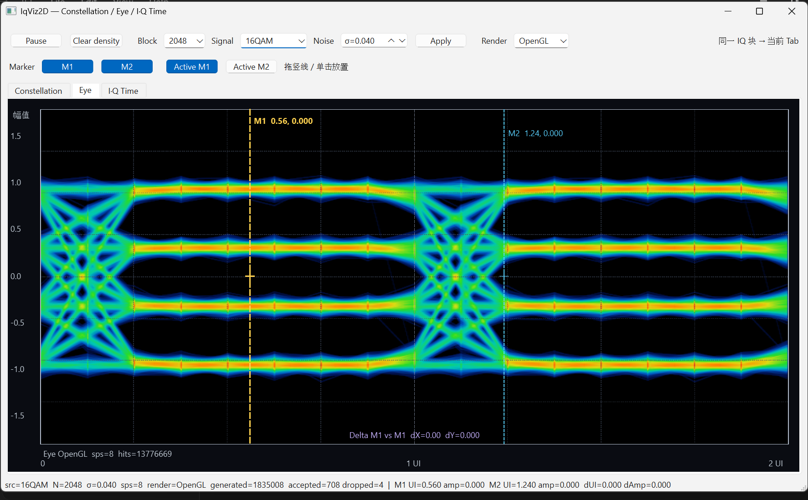

Custom instrument software / Integrated platform
Instrument software platform
A customizable software platform integrating signal processing, measurement workflows, human-machine interaction and advanced rendering for instrument products.
An integrated instrument software platform
The platform connects signal processing algorithms with measurement execution and the operator interface. It provides a software foundation that can be customized around an instrument’s acquisition paths, measurement modes and interaction requirements.
Algorithm processing, measurement state and rendering form a connected workflow: acquired data becomes analysis results, results feed the measurement interface, and operator actions update the active configuration.
Signal processing and measurement workflows
- Algorithm processing. Organize signal processing and measurement algorithms into reusable components, with defined input data, parameters and result structures.
- Measurement orchestration. Coordinate configuration, acquisition and analysis within a measurement mode. Keep the active parameters and result context consistent across the workflow.
- Human-machine interaction. Connect mode selection, parameter controls and inspection tools to the measurement state so users can understand and control the processing behind each result.
- Advanced rendering. Present waveforms and density distributions through interactive views, including OpenGL-based rendering, without making display logic the owner of the measurement algorithms.
Platform architecture
The platform is organized around distinct responsibilities: device and data interfaces supply signal data; processing components produce analysis results; measurement workflows coordinate execution; interaction and rendering components present those results and accept user input.
Defined boundaries between these responsibilities allow instrument-specific acquisition, algorithms and measurement modes to fit into a shared application foundation. Customization can extend the processing and workflow as well as the interface.
Visualization examples
The following development views illustrate the interaction and rendering part of the platform using a generated 16QAM signal. They demonstrate component behavior rather than measured hardware performance.
Constellation density view
A density-colored constellation makes sample concentrations and the spread around symbol positions visible. The interface exposes block size, signal selection and noise controls, alongside pause and clear-density actions.

Eye diagram and interactive markers
The eye view overlays signal trajectories across a two-unit-interval display. M1 and M2 controls and marker readouts support inspection of positions within the plot, while density coloring highlights frequently occurring trajectories.

Customization across the software stack
The common platform supports customization of signal processing, measurement sequences, device integration and operator workflows. Visualization components are one part of that foundation, alongside the algorithms and execution logic that make an instrument useful.